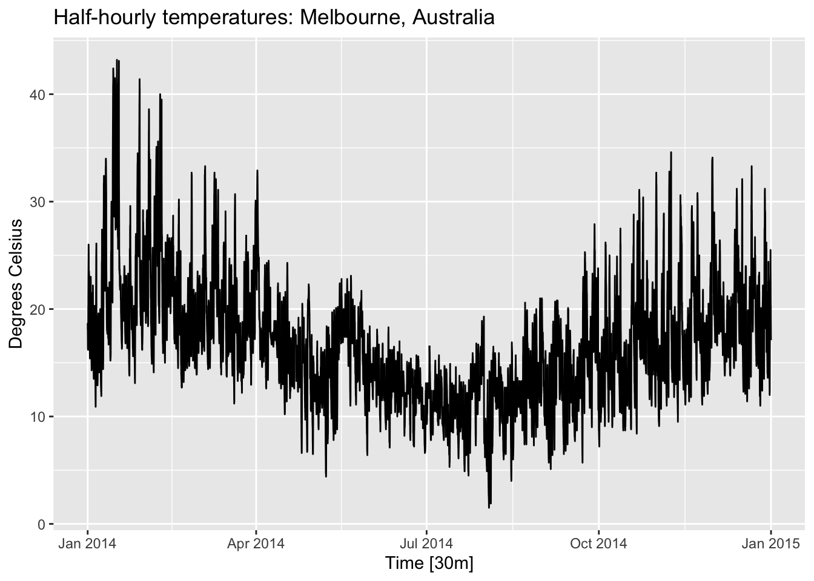
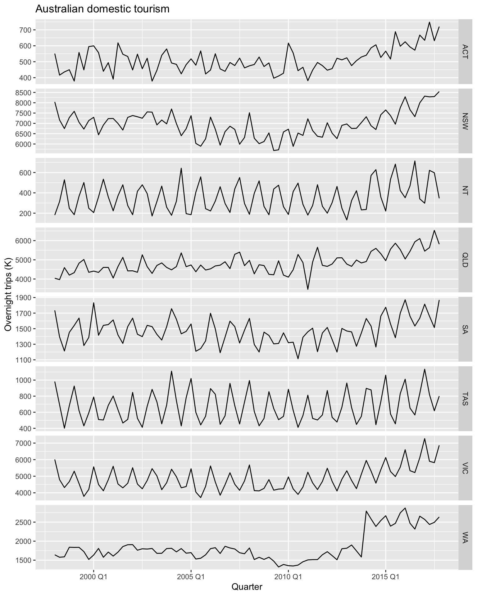
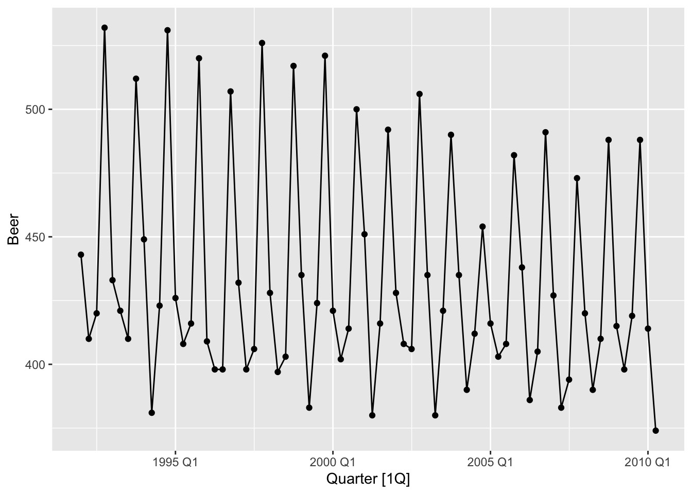
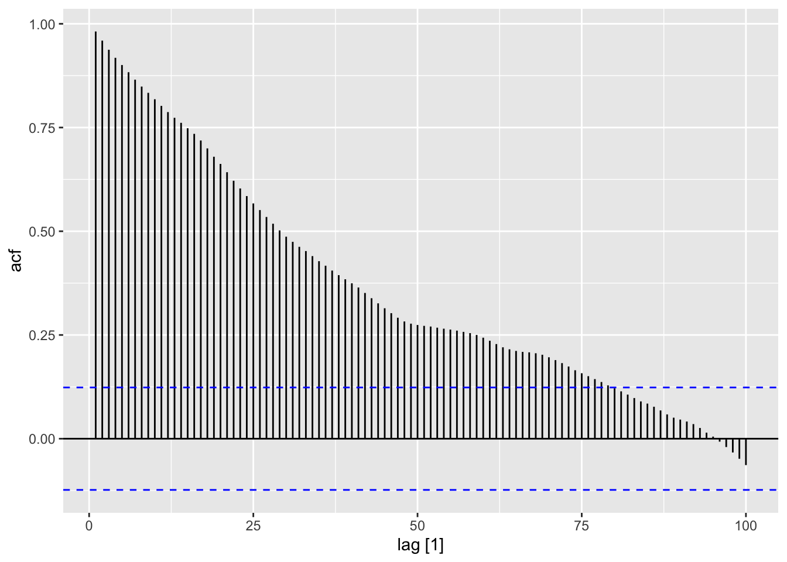
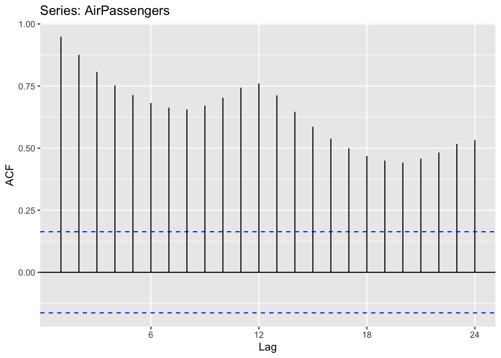

Chapter 2 Time series graphics
The first step in data analysis is to plot the data. Graphs help visualize patterns, outliers, trends, and relationships. These insights guide the choice of forecasting methods and appropriate graphs, depending on the data type.
# loading libraries
library(tsibble)
library(tsibbledata)
library(tidyverse)
# to read data
library(rio)
library(ggplot2)
library(fabletools)
library(feasts)
library(fpp3)2.1 tsibble object
2.1.1 The index variable
## # A tsibble: 5 x 2 [1Y]
## Year Observations
## <int> <dbl>
## 1 2015 123
## 2 2016 39
## 3 2017 78
## 4 2018 52
## 5 2019 110## tbl_ts [5 × 2] (S3: tbl_ts/tbl_df/tbl/data.frame)
## $ Year : int [1:5] 2015 2016 2017 2018 2019
## $ Observations: num [1:5] 123 39 78 52 110
## - attr(*, "key")= tibble [1 × 1] (S3: tbl_df/tbl/data.frame)
## ..$ .rows: list<int> [1:1]
## .. ..$ : int [1:5] 1 2 3 4 5
## .. ..@ ptype: int(0)
## - attr(*, "index")= chr "Year"
## ..- attr(*, "ordered")= logi TRUE
## - attr(*, "index2")= chr "Year"
## - attr(*, "interval")= interval [1:1] 1Y
## ..@ .regular: logi TRUEConvert from data frame (or tibble) to tsibble.
df <- data.frame(Month = as.character(make_yearmonth(year = 2024, month = 1:5)),
Observation = c(123, 45, 32, 54, 22))
df ## Month Observation
## 1 2024 Jan 123
## 2 2024 Feb 45
## 3 2024 Mar 32
## 4 2024 Apr 54
## 5 2024 May 22## # A tsibble: 5 x 2 [1M]
## Month Observation
## <mth> <dbl>
## 1 2024 Jan 123
## 2 2024 Feb 45
## 3 2024 Mar 32
## 4 2024 Apr 54
## 5 2024 May 22[1M] indicates a monthly data.
To convert tsibble to old ts format:
## Time Series:
## Start = 1
## End = 5
## Frequency = 1
## Month Observation
## 1 3 123
## 2 2 45
## 3 4 32
## 4 1 54
## 5 5 22To convert from ts to tsibble:
## Jan Feb Mar Apr May Jun Jul Aug Sep Oct Nov Dec
## 1949 112 118 132 129 121 135 148 148 136 119 104 118
## 1950 115 126 141 135 125 149 170 170 158 133 114 140
## 1951 145 150 178 163 172 178 199 199 184 162 146 166
## 1952 171 180 193 181 183 218 230 242 209 191 172 194
## 1953 196 196 236 235 229 243 264 272 237 211 180 201
## 1954 204 188 235 227 234 264 302 293 259 229 203 229
## 1955 242 233 267 269 270 315 364 347 312 274 237 278
## 1956 284 277 317 313 318 374 413 405 355 306 271 306
## 1957 315 301 356 348 355 422 465 467 404 347 305 336
## 1958 340 318 362 348 363 435 491 505 404 359 310 337
## 1959 360 342 406 396 420 472 548 559 463 407 362 405
## 1960 417 391 419 461 472 535 622 606 508 461 390 432## # A tsibble: 144 x 2 [1M]
## month value
## <mth> <dbl>
## 1 1949 Jan 112
## 2 1949 Feb 118
## 3 1949 Mar 132
## 4 1949 Apr 129
## 5 1949 May 121
## 6 1949 Jun 135
## 7 1949 Jul 148
## 8 1949 Aug 148
## 9 1949 Sep 136
## 10 1949 Oct 119
## # ℹ 134 more rows2.1.2 The key variable
Multiple time series in a single object.
## # A tsibble: 312 x 4 [4Y]
## # Key: Length, Sex [14]
## Year Length Sex Time
## <int> <int> <chr> <dbl>
## 1 1896 100 men 12
## 2 1900 100 men 11
## 3 1904 100 men 11
## 4 1908 100 men 10.8
## 5 1912 100 men 10.8
## 6 1916 100 men NA
## 7 1920 100 men 10.8
## 8 1924 100 men 10.6
## 9 1928 100 men 10.8
## 10 1932 100 men 10.3
## # ℹ 302 more rows[4K] indicates that the interval if these observations is every four years. [14] indicates there are 14 separaste time series in the stibble object.
## [[1]]
## Length
##
## [[2]]
## Sex## # A tibble: 2 × 1
## Sex
## <chr>
## 1 men
## 2 women## # A tibble: 7 × 1
## Length
## <int>
## 1 100
## 2 200
## 3 400
## 4 800
## 5 1500
## 6 5000
## 7 10000## # A tibble: 14 × 2
## Sex Length
## <chr> <int>
## 1 men 100
## 2 women 100
## 3 men 200
## 4 women 200
## 5 men 400
## 6 women 400
## 7 men 800
## 8 women 800
## 9 men 1500
## 10 women 1500
## 11 men 5000
## 12 women 5000
## 13 men 10000
## 14 women 10000## [1] "Length" "Sex"2.1.3 Working with tsibble object
dplyr functions such as mutate(), filter(), select() and summarise() work with tsibble objects.
## # A tsibble: 67,596 x 9 [1M]
## # Key: Concession, Type, ATC1, ATC2 [336]
## Month Concession Type ATC1 ATC1_desc ATC2 ATC2_desc Scripts Cost
## <mth> <chr> <chr> <chr> <chr> <chr> <chr> <dbl> <dbl>
## 1 1991 Jul Concessional Co-payments A Alimentary tract and metabolism A01 STOMATOLOGICAL PREPARATIONS 18228 67877
## 2 1991 Aug Concessional Co-payments A Alimentary tract and metabolism A01 STOMATOLOGICAL PREPARATIONS 15327 57011
## 3 1991 Sep Concessional Co-payments A Alimentary tract and metabolism A01 STOMATOLOGICAL PREPARATIONS 14775 55020
## 4 1991 Oct Concessional Co-payments A Alimentary tract and metabolism A01 STOMATOLOGICAL PREPARATIONS 15380 57222
## 5 1991 Nov Concessional Co-payments A Alimentary tract and metabolism A01 STOMATOLOGICAL PREPARATIONS 14371 52120
## 6 1991 Dec Concessional Co-payments A Alimentary tract and metabolism A01 STOMATOLOGICAL PREPARATIONS 15028 54299
## 7 1992 Jan Concessional Co-payments A Alimentary tract and metabolism A01 STOMATOLOGICAL PREPARATIONS 11040 39753
## 8 1992 Feb Concessional Co-payments A Alimentary tract and metabolism A01 STOMATOLOGICAL PREPARATIONS 15165 54405
## 9 1992 Mar Concessional Co-payments A Alimentary tract and metabolism A01 STOMATOLOGICAL PREPARATIONS 16898 61108
## 10 1992 Apr Concessional Co-payments A Alimentary tract and metabolism A01 STOMATOLOGICAL PREPARATIONS 18141 65356
## # ℹ 67,586 more rows## # A tsibble: 816 x 9 [1M]
## # Key: Concession, Type, ATC1, ATC2 [4]
## Month Concession Type ATC1 ATC1_desc ATC2 ATC2_desc Scripts Cost
## <mth> <chr> <chr> <chr> <chr> <chr> <chr> <dbl> <dbl>
## 1 1991 Jul Concessional Co-payments A Alimentary tract and metabolism A10 ANTIDIABETIC THERAPY 89733 2092878
## 2 1991 Aug Concessional Co-payments A Alimentary tract and metabolism A10 ANTIDIABETIC THERAPY 77101 1795733
## 3 1991 Sep Concessional Co-payments A Alimentary tract and metabolism A10 ANTIDIABETIC THERAPY 76255 1777231
## 4 1991 Oct Concessional Co-payments A Alimentary tract and metabolism A10 ANTIDIABETIC THERAPY 78681 1848507
## 5 1991 Nov Concessional Co-payments A Alimentary tract and metabolism A10 ANTIDIABETIC THERAPY 70554 1686458
## 6 1991 Dec Concessional Co-payments A Alimentary tract and metabolism A10 ANTIDIABETIC THERAPY 75814 1843079
## 7 1992 Jan Concessional Co-payments A Alimentary tract and metabolism A10 ANTIDIABETIC THERAPY 64186 1564702
## 8 1992 Feb Concessional Co-payments A Alimentary tract and metabolism A10 ANTIDIABETIC THERAPY 75899 1732508
## 9 1992 Mar Concessional Co-payments A Alimentary tract and metabolism A10 ANTIDIABETIC THERAPY 89445 2046102
## 10 1992 Apr Concessional Co-payments A Alimentary tract and metabolism A10 ANTIDIABETIC THERAPY 97315 2225977
## # ℹ 806 more rows## # A tsibble: 816 x 4 [1M]
## # Key: Concession, Type [4]
## Month Concession Type Cost
## <mth> <chr> <chr> <dbl>
## 1 1991 Jul Concessional Co-payments 2092878
## 2 1991 Aug Concessional Co-payments 1795733
## 3 1991 Sep Concessional Co-payments 1777231
## 4 1991 Oct Concessional Co-payments 1848507
## 5 1991 Nov Concessional Co-payments 1686458
## 6 1991 Dec Concessional Co-payments 1843079
## 7 1992 Jan Concessional Co-payments 1564702
## 8 1992 Feb Concessional Co-payments 1732508
## 9 1992 Mar Concessional Co-payments 2046102
## 10 1992 Apr Concessional Co-payments 2225977
## # ℹ 806 more rows## [1] "Month"## [1] "Concession" "Type" "ATC1" "ATC2"If no one index or key were not explicitly selected, they would be returned as they are required for tsibble to ensure each row contains a unique combination of keys and index.
## # A tsibble: 816 x 6 [1M]
## # Key: Concession, Type, ATC1, ATC2 [4]
## Cost Month Concession Type ATC1 ATC2
## <dbl> <mth> <chr> <chr> <chr> <chr>
## 1 2092878 1991 Jul Concessional Co-payments A A10
## 2 1795733 1991 Aug Concessional Co-payments A A10
## 3 1777231 1991 Sep Concessional Co-payments A A10
## 4 1848507 1991 Oct Concessional Co-payments A A10
## 5 1686458 1991 Nov Concessional Co-payments A A10
## 6 1843079 1991 Dec Concessional Co-payments A A10
## 7 1564702 1992 Jan Concessional Co-payments A A10
## 8 1732508 1992 Feb Concessional Co-payments A A10
## 9 2046102 1992 Mar Concessional Co-payments A A10
## 10 2225977 1992 Apr Concessional Co-payments A A10
## # ℹ 806 more rows## # A tsibble: 816 x 4 [1M]
## # Key: Concession, Type [4]
## Concession Type Cost Month
## <chr> <chr> <dbl> <mth>
## 1 Concessional Co-payments 2092878 1991 Jul
## 2 Concessional Co-payments 1795733 1991 Aug
## 3 Concessional Co-payments 1777231 1991 Sep
## 4 Concessional Co-payments 1848507 1991 Oct
## 5 Concessional Co-payments 1686458 1991 Nov
## 6 Concessional Co-payments 1843079 1991 Dec
## 7 Concessional Co-payments 1564702 1992 Jan
## 8 Concessional Co-payments 1732508 1992 Feb
## 9 Concessional Co-payments 2046102 1992 Mar
## 10 Concessional Co-payments 2225977 1992 Apr
## # ℹ 806 more rowsPBS |>
filter(ATC2 == 'A10') |>
select(Month, Concession, Type, Cost) |>
summarise(TotalC = sum(Cost))## # A tsibble: 204 x 2 [1M]
## Month TotalC
## <mth> <dbl>
## 1 1991 Jul 3526591
## 2 1991 Aug 3180891
## 3 1991 Sep 3252221
## 4 1991 Oct 3611003
## 5 1991 Nov 3565869
## 6 1991 Dec 4306371
## 7 1992 Jan 5088335
## 8 1992 Feb 2814520
## 9 1992 Mar 2985811
## 10 1992 Apr 3204780
## # ℹ 194 more rowsPBS |>
filter(ATC2 == 'A10') |>
select(Month, Concession, Type, Cost) |>
summarise(TotalC = sum(Cost)) |>
mutate(Cost = TotalC / 1e6)## # A tsibble: 204 x 3 [1M]
## Month TotalC Cost
## <mth> <dbl> <dbl>
## 1 1991 Jul 3526591 3.53
## 2 1991 Aug 3180891 3.18
## 3 1991 Sep 3252221 3.25
## 4 1991 Oct 3611003 3.61
## 5 1991 Nov 3565869 3.57
## 6 1991 Dec 4306371 4.31
## 7 1992 Jan 5088335 5.09
## 8 1992 Feb 2814520 2.81
## 9 1992 Mar 2985811 2.99
## 10 1992 Apr 3204780 3.20
## # ℹ 194 more rowsSave to the further usage.
PBS |>
filter(ATC2 == 'A10') |>
select(Month, Concession, Type, Cost) |>
summarise(TotalC = sum(Cost)) |>
mutate(Cost = TotalC / 1e6) -> a10
a10## # A tsibble: 204 x 3 [1M]
## Month TotalC Cost
## <mth> <dbl> <dbl>
## 1 1991 Jul 3526591 3.53
## 2 1991 Aug 3180891 3.18
## 3 1991 Sep 3252221 3.25
## 4 1991 Oct 3611003 3.61
## 5 1991 Nov 3565869 3.57
## 6 1991 Dec 4306371 4.31
## 7 1992 Jan 5088335 5.09
## 8 1992 Feb 2814520 2.81
## 9 1992 Mar 2985811 2.99
## 10 1992 Apr 3204780 3.20
## # ℹ 194 more rows2.1.4 Read a csv file and convert to a tsibble
prison <- import('https://OTexts.com/fpp3/extrafiles/prison_population.csv')
prison <- prison |>
mutate(Quarter = yearquarter(Date)) |>
select(-Date) |>
as_tsibble(key = c(State, Gender, Legal, Indigenous))## Using `Quarter` as index variable.## # A tsibble: 3,072 x 6 [1Q]
## # Key: State, Gender, Legal, Indigenous [64]
## State Gender Legal Indigenous Count Quarter
## <chr> <chr> <chr> <chr> <int> <qtr>
## 1 ACT Female Remanded ATSI 0 2005 Q1
## 2 ACT Female Remanded ATSI 1 2005 Q2
## 3 ACT Female Remanded ATSI 0 2005 Q3
## 4 ACT Female Remanded ATSI 0 2005 Q4
## 5 ACT Female Remanded ATSI 1 2006 Q1
## 6 ACT Female Remanded ATSI 1 2006 Q2
## 7 ACT Female Remanded ATSI 1 2006 Q3
## 8 ACT Female Remanded ATSI 0 2006 Q4
## 9 ACT Female Remanded ATSI 0 2007 Q1
## 10 ACT Female Remanded ATSI 1 2007 Q2
## # ℹ 3,062 more rowsFor a tsibble to be valid, it requires a unique index for each combination of keys. The
tsibble()oras_tsibble()function will return an error if this is not true.
2.2 Time plot
## # A tsibble: 204 x 3 [1M]
## Month TotalC Cost
## <mth> <dbl> <dbl>
## 1 1991 Jul 3526591 3.53
## 2 1991 Aug 3180891 3.18
## 3 1991 Sep 3252221 3.25
## 4 1991 Oct 3611003 3.61
## 5 1991 Nov 3565869 3.57
## 6 1991 Dec 4306371 4.31
## 7 1992 Jan 5088335 5.09
## 8 1992 Feb 2814520 2.81
## 9 1992 Mar 2985811 2.99
## 10 1992 Apr 3204780 3.20
## # ℹ 194 more rowsautoplot() is a smart function.
It automatically produces an appropriate plot of whatever you pass to it in the first argument
Using ggplot.
a10 |>
ggplot(aes(x = Month, y = Cost)) +
geom_line() +
ggtitle('Australian antidiabetic drug sales') +
ylab('$ (millions)')Add points on the line.
a10 |>
autoplot(Cost) +
geom_point() +
labs(y='$ (millions)', title = 'Australian antidiabetic drug sales')## # A tsibble: 7,407 x 4 [1W]
## # Key: Airports, Class [30]
## Week Airports Class Passengers
## <week> <chr> <chr> <dbl>
## 1 1989 W28 ADL-PER Business 193
## 2 1989 W29 ADL-PER Business 254
## 3 1989 W30 ADL-PER Business 185
## 4 1989 W31 ADL-PER Business 254
## 5 1989 W32 ADL-PER Business 191
## 6 1989 W33 ADL-PER Business 136
## 7 1989 W34 ADL-PER Business 0
## 8 1989 W35 ADL-PER Business 0
## 9 1989 W36 ADL-PER Business 0
## 10 1989 W37 ADL-PER Business 0
## # ℹ 7,397 more rowsDistinct categories.
## # A tibble: 3 × 1
## Class
## <chr>
## 1 Business
## 2 Economy
## 3 First## # A tibble: 10 × 1
## Airports
## <chr>
## 1 ADL-PER
## 2 MEL-ADL
## 3 MEL-BNE
## 4 MEL-OOL
## 5 MEL-PER
## 6 MEL-SYD
## 7 SYD-ADL
## 8 SYD-BNE
## 9 SYD-OOL
## 10 SYD-PERansett |>
filter(Class == 'Economy') |>
autoplot(Passengers) +
labs(y = 'Number of passanger', x = 'Week', title = 'Number of passangers by routs')2.3 Time series patterns
- Trend: pattern exists when there is a long-term increase or decrease in the data.
- Seasonal: pattern exists when a series is influenced by seasonal factor (quarter, month, week, day of the week, etc.).
- Cyclic: pattern exists when data exhibit rises and falls that are not of fixed period.
# positive trend
aus_production |>
filter(year(Quarter) >= 1980) |>
autoplot(Electricity) +
labs(y = 'GWh', title = 'Australian electricity production')Important! Many time series include trend, cycles and seasonality. When choosing a forecasting method, we will first need to identify the time series patterns in the data, and then choose a method that is able to capture the patterns properly.
aus_production |>
autoplot(Bricks) +
labs(y = 'MIllion units', title = 'Australian clay brick production')## Warning: Removed 20 rows containing missing values or values outside the scale range (`geom_line()`).The timing of peaks and troughs is predictable with seasonal data, but unpredictable in the long term with ciclic data.
2.4 Seasonal plots

A seasonal plot plots the data against the individual season in which the data were observed.
a10 |>
gg_season(Cost, labels = 'both') +
labs(y = '$ million', title = 'Seasonal plot: antidiabetic drug sales')beer <- aus_production |>
select(Quarter, Beer) |>
filter(year(Quarter) >= 1992)
beer |> autoplot(Beer) +
geom_point() +
labs(title = 'Australian beer production', y = 'Megalitres')2.4.1 Multiple seasonal periods
## Plot variable not specified, automatically selected `.vars = Demand`
By time during the day.
vic_elec |>
gg_season(Demand, period = 'day') +
theme(legend.position = "none") +
labs(y="MWh", title="Electricity demand: Victoria")
Weekly.
vic_elec |>
gg_season(Demand, period = 'week') +
theme(legend.position = "none") +
labs(y="MWh", title="Electricity demand: Victoria")Monthly.
2.5 Seasonal subseries plots
Mini plots per each season.
This plot is useful to identify changing within particular seasons.
2.5.1 Example: Australian holiday tourism
holidays <- tourism |>
filter(Purpose == 'Holiday') |>
group_by(State) |>
summarise(Trips = sum(Trips))
holidays## # A tsibble: 640 x 3 [1Q]
## # Key: State [8]
## State Quarter Trips
## <chr> <qtr> <dbl>
## 1 ACT 1998 Q1 196.
## 2 ACT 1998 Q2 127.
## 3 ACT 1998 Q3 111.
## 4 ACT 1998 Q4 170.
## 5 ACT 1999 Q1 108.
## 6 ACT 1999 Q2 125.
## 7 ACT 1999 Q3 178.
## 8 ACT 1999 Q4 218.
## 9 ACT 2000 Q1 158.
## 10 ACT 2000 Q2 155.
## # ℹ 630 more rowsTime plots of each series show that there is strong seasonality for most states, but that the seasonal peaks do not coincide.
holidays |>
autoplot(Trips) +
labs(y = 'Obernight trips (K)',
title = 'Australian domestic holidays')holidays |>
gg_season(Trips) +
labs(y = 'Obernight trips (K)',
title = 'Australian domestic holidays')Subseries plot.
2.6 Scatterplots
Scatterplots are useful to explore relationship between time series.
vic_elec_day_type = vic_elec |>
filter(year(Time) == 2014) |>
mutate(Day_Type = case_when(Holiday ~ "Holiday",
wday(Date) %in% 2:6 ~ "Weekday",
TRUE ~ "Weekend"))
vic_elec_day_type## # A tsibble: 17,520 x 6 [30m] <Australia/Melbourne>
## Time Demand Temperature Date Holiday Day_Type
## <dttm> <dbl> <dbl> <date> <lgl> <chr>
## 1 2014-01-01 00:00:00 4092. 18.7 2014-01-01 TRUE Holiday
## 2 2014-01-01 00:30:00 4198. 18.1 2014-01-01 TRUE Holiday
## 3 2014-01-01 01:00:00 3915. 18.2 2014-01-01 TRUE Holiday
## 4 2014-01-01 01:30:00 3673. 17.9 2014-01-01 TRUE Holiday
## 5 2014-01-01 02:00:00 3498. 17.6 2014-01-01 TRUE Holiday
## 6 2014-01-01 02:30:00 3339. 16.8 2014-01-01 TRUE Holiday
## 7 2014-01-01 03:00:00 3204. 16.3 2014-01-01 TRUE Holiday
## 8 2014-01-01 03:30:00 3100. 16.6 2014-01-01 TRUE Holiday
## 9 2014-01-01 04:00:00 3039. 16.6 2014-01-01 TRUE Holiday
## 10 2014-01-01 04:30:00 3012. 16.7 2014-01-01 TRUE Holiday
## # ℹ 17,510 more rowsvic_elec_day_type |>
autoplot(facets=TRUE) +
labs(y = "GWh",
title = "Half-hourly electricity demand: Victoria")## Plot variable not specified, automatically selected `.vars = Demand`## Warning in geom_line(...): Ignoring unknown parameters: `facets`vic_elec_day_type |>
autoplot(Temperature) +
labs(y = "Degrees Celsius",
title = "Half-hourly temperatures: Melbourne, Australia")
The relationship between demand and temperature.
vic_elec_day_type |>
ggplot(aes(x = Temperature, y = Demand)) +
geom_point() +
labs(x = 'Temperature (Cº)',
title = 'Electricity demand (GWh')By the type of a day.
vic_elec_day_type |>
ggplot(aes(x = Temperature, y = Demand, colour = Day_Type)) +
geom_point() +
labs(x = 'Temperature (Cº)',
title = 'Electricity demand (GWh)')2.6.1 Correlation
The correlation coefficient.
\[ r = \frac {\sum{(x_t - \bar{x})(y_t - \bar{y})}}{\sqrt{\sum(x_t - \bar{x})^2}\sqrt{\sum(y_t - \bar{y})^2}}, -1 \leq r \leq 1 \]
2.6.2 Scatterplot matrices
## # A tsibble: 24,320 x 5 [1Q]
## # Key: Region, State, Purpose [304]
## Quarter Region State Purpose Trips
## <qtr> <chr> <chr> <chr> <dbl>
## 1 1998 Q1 Adelaide SA Business 135.
## 2 1998 Q2 Adelaide SA Business 110.
## 3 1998 Q3 Adelaide SA Business 166.
## 4 1998 Q4 Adelaide SA Business 127.
## 5 1999 Q1 Adelaide SA Business 137.
## 6 1999 Q2 Adelaide SA Business 200.
## 7 1999 Q3 Adelaide SA Business 169.
## 8 1999 Q4 Adelaide SA Business 134.
## 9 2000 Q1 Adelaide SA Business 154.
## 10 2000 Q2 Adelaide SA Business 169.
## # ℹ 24,310 more rows## # A tsibble: 640 x 3 [1Q]
## # Key: State [8]
## State Quarter Trips
## <chr> <qtr> <dbl>
## 1 ACT 1998 Q1 551.
## 2 ACT 1998 Q2 416.
## 3 ACT 1998 Q3 436.
## 4 ACT 1998 Q4 450.
## 5 ACT 1999 Q1 379.
## 6 ACT 1999 Q2 558.
## 7 ACT 1999 Q3 449.
## 8 ACT 1999 Q4 595.
## 9 ACT 2000 Q1 600.
## 10 ACT 2000 Q2 557.
## # ℹ 630 more rowsvisitors |>
ggplot(aes(x = Quarter, y = Trips)) +
geom_line() +
facet_grid(vars(State), scales = 'free_y') +
labs(title = 'Australian domestic tourism',
y = 'Overnight trips (K)')
A scatterplot matrix displays the relationships between pairs of variables in a dataset by showing scatterplots for each combination of variables. This helps to visualize correlations, trends, and patterns between variables, making it easier to detect linear relationships, clusters, or outliers. Each scatterplot shows how one variable relates to another, and the diagonal typically contains the distribution (e.g., histograms, density) of each variable.
2.7 Lag plots
Lag plot uses to identify relationship between multiple time series.
## # A tsibble: 74 x 7 [1Q]
## Quarter Beer Tobacco Bricks Cement Electricity Gas
## <qtr> <dbl> <dbl> <dbl> <dbl> <dbl> <dbl>
## 1 1992 Q1 443 5777 383 1289 38332 117
## 2 1992 Q2 410 5853 404 1501 39774 151
## 3 1992 Q3 420 6416 446 1539 42246 175
## 4 1992 Q4 532 5825 420 1568 38498 129
## 5 1993 Q1 433 5724 394 1450 39460 116
## 6 1993 Q2 421 6036 462 1668 41356 149
## 7 1993 Q3 410 6570 475 1648 42949 163
## 8 1993 Q4 512 5675 443 1863 40974 138
## 9 1994 Q1 449 5311 421 1468 40162 127
## 10 1994 Q2 381 5717 475 1755 41199 159
## # ℹ 64 more rows
Each graph shows \(y_t\) plotted against \(y_{t−k}\) for different values of \(k\).
The relationship is strongly positive at lags 4 and 8, reflecting the strong seasonality in the data. The negative relationship seen for lags 2 and 6 occurs because peaks (in Q4) are plotted against troughs (in Q2)
2.8 Autocorrelation
Autocorrelation measures the linear relationship between lagged values of a time series.
For example, \(r_1\) measures the relationship between \(y_t\) and \(y_{t−1}\), \(r_2\) measures the relationship between \(y_t\) and $y_{t−2}, and so on.
\[ ACF_1 = r_1 = Corr(y_t, y_{t-1}) \\ ACF_2 = r_2 = Corr(y_t, y_{t-2}) \\ ... \\ ACF_k = r_k = Corr(y_t, y_{t-k}) \]
The value of \(r_k\) can be written as
$$
r_k = {_{t=1}^T (y_t - {y})^2}
$$
where \(T\) is the length of the time series. The autocorrelation coefficients make up the autocorrelation function or ACF.
## # A tsibble: 9 x 2 [1Q]
## lag acf
## <cf_lag> <dbl>
## 1 1Q -0.102
## 2 2Q -0.657
## 3 3Q -0.0603
## 4 4Q 0.869
## 5 5Q -0.0892
## 6 6Q -0.635
## 7 7Q -0.0542
## 8 8Q 0.832
## 9 9Q -0.108Build correlogram.
Interpretaion:
- \(r_4\) is higher than for the other lags. This is due to the seasonal pattern in the data: the peaks tend to be four quarters apart and the troughs tend to be four quarters apart.
- \(r_2\) is more negative than for the other lags because troughs tend to be two quarters behind peaks.
- The dashed blue lines indicate whether the correlations are significantly different from zero.
2.8.1 Trend and seasonality in ACF plots
Trend: Indicated by a slow decay in autocorrelations over increasing lags, suggesting a persistent pattern. ACF values decrease gradually without sharp drops.
Seasonality: Shown by regular spikes at consistent intervals (lags), reflecting repeating cycles. For example, monthly data with yearly seasonality will spike at lag 12, 24, etc.
When data are both trended and seasonal, you see a combination of these effects.
retail <- us_employment |>
filter(Title == 'Retail Trade', year(Month) >= 1980)
retail |>
autoplot(Employed)google_2015 <- gafa_stock |>
filter(Symbol == 'GOOG', year(Date) == 2015) |>
select(Date, Close)
google_2015## # A tsibble: 252 x 2 [!]
## Date Close
## <date> <dbl>
## 1 2015-01-02 522.
## 2 2015-01-05 511.
## 3 2015-01-06 499.
## 4 2015-01-07 498.
## 5 2015-01-08 500.
## 6 2015-01-09 493.
## 7 2015-01-12 490.
## 8 2015-01-13 493.
## 9 2015-01-14 498.
## 10 2015-01-15 499.
## # ℹ 242 more rows## Warning: Provided data has an irregular interval, results should be treated with caution. Computing ACF by observation.
2.9 White moise
Time series that show no autocorrelation are called white noise.
set.seed(30)
y <- tsibble(sample = 1:50,
wn = rnorm(50),
index = sample)
y |>
autoplot(wn) +
labs(title = 'White noise', y = '')For white noise series, we expect each autocorrelation to be close to zero. For a white noise series, we expect 95% of the spikes in the ACF to lie within \(\pm 1.96/\sqrt{T}\), where \(T\) is the length of the time series.
If one or more large spikes are outside these bounds, or if substantially more than 5% of spikes are outside these bounds, then the series is probably not white noise.
2.10 Excercises
Bricksfromaus_production
?aus_production
# Quarterly estimates of selected indicators of manufacturing production in Australia.
# Bricks: Clay brick production in millions of bricks.
aus_production## # A tsibble: 218 x 7 [1Q]
## Quarter Beer Tobacco Bricks Cement Electricity Gas
## <qtr> <dbl> <dbl> <dbl> <dbl> <dbl> <dbl>
## 1 1956 Q1 284 5225 189 465 3923 5
## 2 1956 Q2 213 5178 204 532 4436 6
## 3 1956 Q3 227 5297 208 561 4806 7
## 4 1956 Q4 308 5681 197 570 4418 6
## 5 1957 Q1 262 5577 187 529 4339 5
## 6 1957 Q2 228 5651 214 604 4811 7
## 7 1957 Q3 236 5317 227 603 5259 7
## 8 1957 Q4 320 6152 222 582 4735 6
## 9 1958 Q1 272 5758 199 554 4608 5
## 10 1958 Q2 233 5641 229 620 5196 7
## # ℹ 208 more rows# What is the time interval: Quarter
aus_production |>
autoplot(Bricks) +
labs(y = 'Bricks (million)', title = 'Quarterly production of bricks (million) in Australia')Lynxfrompelt
?pelt
# Hudson Bay Company trading records for Snowshoe Hare and Canadian Lynx furs from 1845 to 1935. This data contains trade records for all areas of the company.
# Lynx: The number of Canadian Lynx pelts traded.
pelt## # A tsibble: 91 x 3 [1Y]
## Year Hare Lynx
## <dbl> <dbl> <dbl>
## 1 1845 19580 30090
## 2 1846 19600 45150
## 3 1847 19610 49150
## 4 1848 11990 39520
## 5 1849 28040 21230
## 6 1850 58000 8420
## 7 1851 74600 5560
## 8 1852 75090 5080
## 9 1853 88480 10170
## 10 1854 61280 19600
## # ℹ 81 more rows# What is the time interval: Year
pelt |>
autoplot(Lynx) +
labs(y = 'Number of Lynx', title = 'Annual trading of Lynx')Closefromgafa_stock
?gafa_stock
# Historical stock prices from 2014-2018 for Google, Amazon, Facebook and Apple. All prices are in $USD.
# Close: The closing price for the stock.
gafa_stock## # A tsibble: 5,032 x 8 [!]
## # Key: Symbol [4]
## Symbol Date Open High Low Close Adj_Close Volume
## <chr> <date> <dbl> <dbl> <dbl> <dbl> <dbl> <dbl>
## 1 AAPL 2014-01-02 79.4 79.6 78.9 79.0 67.0 58671200
## 2 AAPL 2014-01-03 79.0 79.1 77.2 77.3 65.5 98116900
## 3 AAPL 2014-01-06 76.8 78.1 76.2 77.7 65.9 103152700
## 4 AAPL 2014-01-07 77.8 78.0 76.8 77.1 65.4 79302300
## 5 AAPL 2014-01-08 77.0 77.9 77.0 77.6 65.8 64632400
## 6 AAPL 2014-01-09 78.1 78.1 76.5 76.6 65.0 69787200
## 7 AAPL 2014-01-10 77.1 77.3 75.9 76.1 64.5 76244000
## 8 AAPL 2014-01-13 75.7 77.5 75.7 76.5 64.9 94623200
## 9 AAPL 2014-01-14 76.9 78.1 76.8 78.1 66.1 83140400
## 10 AAPL 2014-01-15 79.1 80.0 78.8 79.6 67.5 97909700
## # ℹ 5,022 more rows# What is the time interval: Trading days
gafa_stock |>
autoplot(Close) +
facet_grid(vars(Symbol), scale = 'free_y') +
labs(y = '$USD', title = 'Historical stock prices from 2014-2018',
subtitle = 'Google, Amazon, Facebook and Apple')Demandfromvic_elec
?vic_elec
# vic_elec is a half-hourly tsibble with three values:
# Demand: Total electricity demand in MWh.
vic_elec## # A tsibble: 52,608 x 5 [30m] <Australia/Melbourne>
## Time Demand Temperature Date Holiday
## <dttm> <dbl> <dbl> <date> <lgl>
## 1 2012-01-01 00:00:00 4383. 21.4 2012-01-01 TRUE
## 2 2012-01-01 00:30:00 4263. 21.0 2012-01-01 TRUE
## 3 2012-01-01 01:00:00 4049. 20.7 2012-01-01 TRUE
## 4 2012-01-01 01:30:00 3878. 20.6 2012-01-01 TRUE
## 5 2012-01-01 02:00:00 4036. 20.4 2012-01-01 TRUE
## 6 2012-01-01 02:30:00 3866. 20.2 2012-01-01 TRUE
## 7 2012-01-01 03:00:00 3694. 20.1 2012-01-01 TRUE
## 8 2012-01-01 03:30:00 3562. 19.6 2012-01-01 TRUE
## 9 2012-01-01 04:00:00 3433. 19.1 2012-01-01 TRUE
## 10 2012-01-01 04:30:00 3359. 19.0 2012-01-01 TRUE
## # ℹ 52,598 more rows# What is the time interval: 30 m
vic_elec |>
autoplot(Demand) +
labs(y = 'Demand (MWh)', title = 'Total electricity demand')peak_stock <- gafa_stock |>
group_by(Symbol) |>
filter(Close == max(Close)) |>
select(Close) |>
ungroup()## Adding missing grouping variables: `Symbol`## # A tsibble: 4 x 3 [!]
## # Key: Symbol [4]
## Symbol Close Date
## <chr> <dbl> <date>
## 1 AAPL 232. 2018-10-03
## 2 AMZN 2040. 2018-09-04
## 3 FB 218. 2018-07-25
## 4 GOOG 1268. 2018-07-26gafa_stock |>
autoplot(Close) +
geom_vline(data=peak_stock, mapping=aes(xintercept=Date), color = 'red') +
geom_point(data=peak_stock, mapping=aes(x=Date, y=Close), color = 'red') +
facet_grid(vars(Symbol), scale = 'free_y') +
labs(y = '$USD', title = 'Historical stock prices from 2014-2018',
subtitle = 'Google, Amazon, Facebook and Apple')## Quarter Sales AdBudget GDP
## 1 1981-03-01 1020.2 659.2 251.8
## 2 1981-06-01 889.2 589.0 290.9
## 3 1981-09-01 795.0 512.5 290.8
## 4 1981-12-01 1003.9 614.1 292.4
## 5 1982-03-01 1057.7 647.2 279.1
## 6 1982-06-01 944.4 602.0 254.0
## 7 1982-09-01 778.5 530.7 295.6
## 8 1982-12-01 932.5 608.4 271.7
## 9 1983-03-01 996.5 637.9 259.6
## 10 1983-06-01 907.7 582.4 280.5
## 11 1983-09-01 735.1 506.8 287.2
## 12 1983-12-01 958.1 606.7 278.0
## 13 1984-03-01 1034.1 658.7 256.8
## 14 1984-06-01 992.8 614.9 271.0
## 15 1984-09-01 791.7 489.9 300.9
## 16 1984-12-01 914.2 586.5 289.8
## 17 1985-03-01 1106.5 663.0 266.8
## 18 1985-06-01 985.1 591.7 273.7
## 19 1985-09-01 823.9 502.2 301.3
## 20 1985-12-01 1025.1 616.4 285.6
## 21 1986-03-01 1064.7 647.1 270.6
## 22 1986-06-01 981.9 615.5 274.6
## 23 1986-09-01 828.3 514.8 299.7
## 24 1986-12-01 940.7 609.1 275.9
## 25 1987-03-01 991.1 641.3 279.3
## 26 1987-06-01 1021.2 620.2 290.8
## 27 1987-09-01 796.7 511.2 295.6
## 28 1987-12-01 986.6 621.3 271.9
## 29 1988-03-01 1054.2 645.3 267.4
## 30 1988-06-01 1018.7 616.0 281.0
## 31 1988-09-01 815.6 503.2 309.0
## 32 1988-12-01 1010.6 617.5 266.7
## 33 1989-03-01 1071.5 642.8 283.5
## 34 1989-06-01 954.0 585.6 282.3
## 35 1989-09-01 822.9 520.6 289.2
## 36 1989-12-01 867.5 608.6 270.7
## 37 1990-03-01 1002.3 645.7 266.5
## 38 1990-06-01 972.0 597.4 287.9
## 39 1990-09-01 782.9 499.8 287.6
## 40 1990-12-01 972.8 601.8 283.4
## 41 1991-03-01 1108.0 650.8 266.4
## 42 1991-06-01 943.7 588.3 292.3
## 43 1991-09-01 806.1 491.6 330.6
## 44 1991-12-01 954.2 603.3 286.2
## 45 1992-03-01 1115.5 663.2 259.2
## 46 1992-06-01 927.1 614.0 263.7
## 47 1992-09-01 800.7 506.3 288.2
## 48 1992-12-01 955.7 606.2 274.1
## 49 1993-03-01 1049.8 639.5 287.1
## 50 1993-06-01 886.0 585.9 285.5
## 51 1993-09-01 786.4 492.2 303.7
## 52 1993-12-01 991.3 610.4 275.6
## 53 1994-03-01 1113.9 660.8 249.3
## 54 1994-06-01 924.5 612.2 272.9
## 55 1994-09-01 771.4 509.2 289.8
## 56 1994-12-01 949.8 612.1 269.2
## 57 1995-03-01 990.5 653.2 261.3
## 58 1995-06-01 1071.4 605.3 292.9
## 59 1995-09-01 854.1 506.6 304.6
## 60 1995-12-01 929.8 597.4 276.3
## 61 1996-03-01 959.6 635.2 268.2
## 62 1996-06-01 991.1 611.6 293.5
## 63 1996-09-01 832.9 503.8 311.1
## 64 1996-12-01 1006.1 609.9 273.7
## 65 1997-03-01 1040.7 645.2 267.5
## 66 1997-06-01 1026.3 609.8 271.9
## 67 1997-09-01 785.9 512.1 308.8
## 68 1997-12-01 997.6 603.7 282.9
## 69 1998-03-01 1055.0 639.4 268.4
## 70 1998-06-01 925.6 601.6 271.4
## 71 1998-09-01 805.6 497.0 292.1
## 72 1998-12-01 934.1 602.8 287.6
## 73 1999-03-01 1081.7 647.3 258.0
## 74 1999-06-01 1062.3 612.5 282.9
## 75 1999-09-01 798.8 492.2 295.0
## 76 1999-12-01 1014.3 610.8 271.2
## 77 2000-03-01 1049.5 646.5 275.4
## 78 2000-06-01 961.7 603.3 284.0
## 79 2000-09-01 793.4 503.8 300.9
## 80 2000-12-01 872.3 598.3 277.4
## 81 2001-03-01 1014.2 649.4 273.8
## 82 2001-06-01 952.6 620.2 288.4
## 83 2001-09-01 792.4 497.9 283.4
## 84 2001-12-01 922.3 609.2 273.4
## 85 2002-03-01 1055.9 665.9 271.5
## 86 2002-06-01 906.2 600.4 283.6
## 87 2002-09-01 811.2 502.3 290.6
## 88 2002-12-01 1005.8 605.6 289.1
## 89 2003-03-01 1013.8 647.6 282.2
## 90 2003-06-01 905.6 583.5 285.6
## 91 2003-09-01 957.3 502.5 304.0
## 92 2003-12-01 1059.5 625.9 271.5
## 93 2004-03-01 1090.6 648.7 263.9
## 94 2004-06-01 998.9 610.7 288.3
## 95 2004-09-01 866.6 519.1 290.2
## 96 2004-12-01 1018.7 634.9 284.0
## 97 2005-03-01 1112.5 663.1 270.9
## 98 2005-06-01 997.4 583.3 294.7
## 99 2005-09-01 826.8 508.6 292.2
## 100 2005-12-01 992.6 634.2 255.1## 'data.frame': 100 obs. of 4 variables:
## $ Quarter : IDate, format: "1981-03-01" "1981-06-01" "1981-09-01" "1981-12-01" ...
## $ Sales : num 1020 889 795 1004 1058 ...
## $ AdBudget: num 659 589 512 614 647 ...
## $ GDP : num 252 291 291 292 279 ...## # A tsibble: 100 x 4 [1Q]
## Quarter Sales AdBudget GDP
## <qtr> <dbl> <dbl> <dbl>
## 1 1981 Q1 1020. 659. 252.
## 2 1981 Q2 889. 589 291.
## 3 1981 Q3 795 512. 291.
## 4 1981 Q4 1004. 614. 292.
## 5 1982 Q1 1058. 647. 279.
## 6 1982 Q2 944. 602 254
## 7 1982 Q3 778. 531. 296.
## 8 1982 Q4 932. 608. 272.
## 9 1983 Q1 996. 638. 260.
## 10 1983 Q2 908. 582. 280.
## # ℹ 90 more rows# c.
tute |>
mutate(Quarter = yearquarter(Quarter)) |>
as_tsibble(index = Quarter) |>
pivot_longer(-Quarter) |>
ggplot(aes(x = Quarter, y = value, color = name)) +
geom_line()
tute |>
mutate(Quarter = yearquarter(Quarter)) |>
as_tsibble(index = Quarter) |>
pivot_longer(-Quarter) |>
autoplot()## Plot variable not specified, automatically selected `.vars = value`# split time series into different plots
tute |>
mutate(Quarter = yearquarter(Quarter)) |>
as_tsibble(index = Quarter) |>
pivot_longer(-Quarter) |>
ggplot(aes(x = Quarter, y = value, color = name)) +
geom_line() +
facet_grid(name ~ ., scales = "free_y")
# a.
# load library
library(USgas)
?us_total
# b.
us_total |>
as_tsibble(index = year, key = c(state))## # A tsibble: 1,266 x 3 [1Y]
## # Key: state [53]
## year state y
## <int> <chr> <int>
## 1 1997 Alabama 324158
## 2 1998 Alabama 329134
## 3 1999 Alabama 337270
## 4 2000 Alabama 353614
## 5 2001 Alabama 332693
## 6 2002 Alabama 379343
## 7 2003 Alabama 350345
## 8 2004 Alabama 382367
## 9 2005 Alabama 353156
## 10 2006 Alabama 391093
## # ℹ 1,256 more rows# c.
us_total |>
as_tsibble(index = year, key = c(state)) |>
filter(state %in% c('Maine', 'Vermont', 'New Hampshire',
'Massachusetts', 'Connecticut', 'Rhode Island')) |>
autoplot() +
labs(y = 'Volume (Million Cubic Feet)',
title = 'Annual natural gas consumption',
subtitle = 'New England area')## Plot variable not specified, automatically selected `.vars = y`## # A tsibble: 24,320 x 5 [1Q]
## # Key: Region, State, Purpose [304]
## Quarter Region State Purpose Trips
## <qtr> <chr> <chr> <chr> <dbl>
## 1 1998 Q1 Adelaide SA Business 135.
## 2 1998 Q2 Adelaide SA Business 110.
## 3 1998 Q3 Adelaide SA Business 166.
## 4 1998 Q4 Adelaide SA Business 127.
## 5 1999 Q1 Adelaide SA Business 137.
## 6 1999 Q2 Adelaide SA Business 200.
## 7 1999 Q3 Adelaide SA Business 169.
## 8 1999 Q4 Adelaide SA Business 134.
## 9 2000 Q1 Adelaide SA Business 154.
## 10 2000 Q2 Adelaide SA Business 169.
## # ℹ 24,310 more rows# index = Quarter, keys = [Region, State, Purpose]
ts_tourims <- tourism.5 |>
mutate(Quarter = yearquarter(Quarter)) |>
as_tsibble(index = Quarter,
key = c('Region', 'State', 'Purpose'))
ts_tourims## # A tsibble: 24,320 x 5 [1Q]
## # Key: Region, State, Purpose [304]
## Quarter Region State Purpose Trips
## <qtr> <chr> <chr> <chr> <dbl>
## 1 1998 Q1 Adelaide South Australia Business 135.
## 2 1998 Q2 Adelaide South Australia Business 110.
## 3 1998 Q3 Adelaide South Australia Business 166.
## 4 1998 Q4 Adelaide South Australia Business 127.
## 5 1999 Q1 Adelaide South Australia Business 137.
## 6 1999 Q2 Adelaide South Australia Business 200.
## 7 1999 Q3 Adelaide South Australia Business 169.
## 8 1999 Q4 Adelaide South Australia Business 134.
## 9 2000 Q1 Adelaide South Australia Business 154.
## 10 2000 Q2 Adelaide South Australia Business 169.
## # ℹ 24,310 more rows## # A tibble: 76 × 1
## Region
## <chr>
## 1 Adelaide
## 2 Adelaide Hills
## 3 Alice Springs
## 4 Australia's Coral Coast
## 5 Australia's Golden Outback
## 6 Australia's North West
## 7 Australia's South West
## 8 Ballarat
## 9 Barkly
## 10 Barossa
## # ℹ 66 more rows## # A tibble: 4 × 1
## Purpose
## <chr>
## 1 Business
## 2 Holiday
## 3 Other
## 4 Visitingts_tourims |>
group_by(Region, Purpose) |>
summarise(Trips = mean(Trips)) |>
arrange(desc(Trips)) |>
slice(1)## Warning: Current temporal ordering may yield unexpected results.
## ℹ Suggest to sort by `Region`, `Purpose`, `Quarter` first.## # A tsibble: 76 x 4 [1Q]
## # Key: Region, Purpose [76]
## # Groups: Region [76]
## Region Purpose Quarter Trips
## <chr> <chr> <qtr> <dbl>
## 1 Adelaide Visiting 2017 Q1 270.
## 2 Adelaide Hills Visiting 2002 Q4 81.1
## 3 Alice Springs Holiday 1998 Q3 76.5
## 4 Australia's Coral Coast Holiday 2014 Q3 198.
## 5 Australia's Golden Outback Business 2017 Q3 174.
## 6 Australia's North West Business 2016 Q3 297.
## 7 Australia's South West Holiday 2016 Q1 612.
## 8 Ballarat Visiting 2004 Q1 103.
## 9 Barkly Holiday 1998 Q3 37.9
## 10 Barossa Holiday 2006 Q1 51.0
## # ℹ 66 more rows#d.
ts_tourims |>
group_by(State) |>
summarise(total_trips = sum(Trips)) |>
as_tsibble(index = Quarter, key = c(State))## # A tsibble: 640 x 3 [1Q]
## # Key: State [8]
## State Quarter total_trips
## <chr> <qtr> <dbl>
## 1 ACT 1998 Q1 551.
## 2 ACT 1998 Q2 416.
## 3 ACT 1998 Q3 436.
## 4 ACT 1998 Q4 450.
## 5 ACT 1999 Q1 379.
## 6 ACT 1999 Q2 558.
## 7 ACT 1999 Q3 449.
## 8 ACT 1999 Q4 595.
## 9 ACT 2000 Q1 600.
## 10 ACT 2000 Q2 557.
## # ℹ 630 more rows## # A tsibble: 508 x 3 [1Q]
## # Key: Origin [4]
## Quarter Origin Arrivals
## <qtr> <chr> <int>
## 1 1981 Q1 Japan 14763
## 2 1981 Q2 Japan 9321
## 3 1981 Q3 Japan 10166
## 4 1981 Q4 Japan 19509
## 5 1982 Q1 Japan 17117
## 6 1982 Q2 Japan 10617
## 7 1982 Q3 Japan 11737
## 8 1982 Q4 Japan 20961
## 9 1983 Q1 Japan 20671
## 10 1983 Q2 Japan 12235
## # ℹ 498 more rows# autoplot()
aus_arrivals |>
autoplot(Arrivals) +
facet_grid(vars(Origin), scales = 'free_y') +
labs(title = 'Quarterly international arrivals to Australia')
# gg_season()
aus_arrivals |>
gg_season(Arrivals, labels = 'both') +
facet_grid(vars(Origin), scales = 'free_y') +
labs(title = 'Seasonal international arrivals to Australia')
# gg_subseries()
aus_arrivals |>
gg_subseries(Arrivals) +
labs(title = 'Quarterly international arrivals to Australia')## # A tsibble: 64,532 x 5 [1M]
## # Key: State, Industry [152]
## State Industry `Series ID` Month Turnover
## <chr> <chr> <chr> <mth> <dbl>
## 1 Australian Capital Territory Cafes, restaurants and catering services A3349849A 1982 Apr 4.4
## 2 Australian Capital Territory Cafes, restaurants and catering services A3349849A 1982 May 3.4
## 3 Australian Capital Territory Cafes, restaurants and catering services A3349849A 1982 Jun 3.6
## 4 Australian Capital Territory Cafes, restaurants and catering services A3349849A 1982 Jul 4
## 5 Australian Capital Territory Cafes, restaurants and catering services A3349849A 1982 Aug 3.6
## 6 Australian Capital Territory Cafes, restaurants and catering services A3349849A 1982 Sep 4.2
## 7 Australian Capital Territory Cafes, restaurants and catering services A3349849A 1982 Oct 4.8
## 8 Australian Capital Territory Cafes, restaurants and catering services A3349849A 1982 Nov 5.4
## 9 Australian Capital Territory Cafes, restaurants and catering services A3349849A 1982 Dec 6.9
## 10 Australian Capital Territory Cafes, restaurants and catering services A3349849A 1983 Jan 3.8
## # ℹ 64,522 more rows## # A tsibble: 441 x 5 [1M]
## # Key: State, Industry [1]
## State Industry `Series ID` Month Turnover
## <chr> <chr> <chr> <mth> <dbl>
## 1 Victoria Other recreational goods retailing A3349415T 1982 Apr 15.6
## 2 Victoria Other recreational goods retailing A3349415T 1982 May 15.8
## 3 Victoria Other recreational goods retailing A3349415T 1982 Jun 15.2
## 4 Victoria Other recreational goods retailing A3349415T 1982 Jul 15.2
## 5 Victoria Other recreational goods retailing A3349415T 1982 Aug 14.5
## 6 Victoria Other recreational goods retailing A3349415T 1982 Sep 15.1
## 7 Victoria Other recreational goods retailing A3349415T 1982 Oct 16.3
## 8 Victoria Other recreational goods retailing A3349415T 1982 Nov 17.5
## 9 Victoria Other recreational goods retailing A3349415T 1982 Dec 21.5
## 10 Victoria Other recreational goods retailing A3349415T 1983 Jan 15.6
## # ℹ 431 more rows## Plot variable not specified, automatically selected `.vars = Turnover`## Plot variable not specified, automatically selected `y = Turnover`## Plot variable not specified, automatically selected `y = Turnover`## Plot variable not specified, automatically selected `y = Turnover`
## Plot variable not specified, automatically selected `y = Turnover`# “Total Private” Employed from us_employment
total_private <- us_employment |>
filter(Title == 'Total Private')
total_private |> autoplot(Employed)
## Warning: Removed 20 rows containing missing values or values outside the scale range (`geom_line()`).
## Warning: Removed 20 rows containing missing values or values outside the scale range (`geom_line()`).## Warning: Removed 5 rows containing missing values or values outside the scale range (`geom_text()`).## Warning: Removed 6 rows containing missing values or values outside the scale range (`geom_text()`).## Warning: Removed 5 rows containing missing values or values outside the scale range (`geom_line()`).## Warning: Removed 20 rows containing missing values (gg_lag).# “H02” Cost from PBS
h02 <- PBS |>
filter(ATC2 == 'H02') |>
select(Cost) |>
as_tsibble(index = Month, key = c("Concession", "Type", "ATC1", "ATC2"))
h02 |> autoplot(Cost) +
facet_grid(Concession ~ Type) +
theme(legend.position="none")


 Source: #9 in 2.10 Exercises section
Source: #9 in 2.10 Exercises section


## # A tsibble: 29,364 x 4 [1M]
## # Key: Animal, State [54]
## Month Animal State Count
## <mth> <fct> <fct> <dbl>
## 1 1976 Jul Bulls, bullocks and steers Australian Capital Territory 2300
## 2 1976 Aug Bulls, bullocks and steers Australian Capital Territory 2100
## 3 1976 Sep Bulls, bullocks and steers Australian Capital Territory 2100
## 4 1976 Oct Bulls, bullocks and steers Australian Capital Territory 1900
## 5 1976 Nov Bulls, bullocks and steers Australian Capital Territory 2100
## 6 1976 Dec Bulls, bullocks and steers Australian Capital Territory 1800
## 7 1977 Jan Bulls, bullocks and steers Australian Capital Territory 1800
## 8 1977 Feb Bulls, bullocks and steers Australian Capital Territory 1900
## 9 1977 Mar Bulls, bullocks and steers Australian Capital Territory 2700
## 10 1977 Apr Bulls, bullocks and steers Australian Capital Territory 2300
## # ℹ 29,354 more rows## # A tibble: 8 × 1
## State
## <fct>
## 1 Australian Capital Territory
## 2 New South Wales
## 3 Northern Territory
## 4 Queensland
## 5 South Australia
## 6 Tasmania
## 7 Victoria
## 8 Western Australiapigs <- aus_livestock |>
filter(year(Month) %in% 1990:1995, State == 'Victoria', Animal == 'Pigs')
pigs |> autoplot()## Plot variable not specified, automatically selected `.vars = Count`dgoog <- gafa_stock |>
filter(Symbol == "GOOG", year(Date) >= 2018) |>
mutate(trading_day = row_number()) |>
update_tsibble(index = trading_day, regular = TRUE) |>
mutate(diff = difference(Close))
dgoog |> autoplot(Close)
## Warning: Removed 1 row containing missing values or values outside the scale range (`geom_line()`).